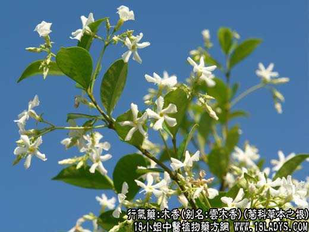
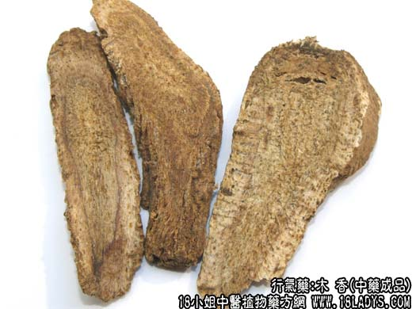

【中药概述】
木香，别名：云木香、广木香、五香、五木香、南木香、厚叶川木香、菜木香、越西木香、膜缘川木香、蜜香，为菊科草本植物木香的根。辛、苦、温。归脾、胃、大肠、胆经。
1．用于胃肠气滞，脘腹胀痛，泻痢后重等，如<香砂六君子汤>、<香连丸>、（卫生宝鉴<木香槟榔丸>）。
2．用于肝胆湿热蕴结，气机滞塞，而见脘胁疼痛或恶心呕吐、口苦苔黄。
【药物形态】
本品呈圆柱形或半圆柱形，长5～lOcm，直径0.5～5cm。表面黄棕色至灰褐色，有明显的皱纹、纵沟及侧根痕。质坚，不易折断，断面灰褐色至暗褐色，屉边灰黄色或浅棕黄色，形成层环棕色，有放射状纹理及散在的褐色点状油室。气香特异，味微苦。
【药效鉴别】本品专以行气通滞为功，能宣三焦之气滞，解寒凝之诸痛，然以疏理胃肠之气分阻滞为主，能升能降，彻里彻外，故称为“气病总药”，而行气止痛之功最为显著。
【药理作用】
1.有解痉作用，对肠管、气管、血管平滑肌均有舒张作用。
2.有降压和利尿作用。
【化学成分】含挥发油、树脂、广木香碱及菊糖等。
【用量用法】3——10g，水煎服，或入丸散剂。
【使用注意】阴虚火旺者慎用。
【注】云木香和川木香性状的区别
木香产于云南等地，故又名云木香（木香）；老木香和新木香均主产于印度，老木香为木香之老者，新木香为栽培品。因过去从广东省进口，故俗有广木香之称；
云木香表面有明显致密的网纹，断面有多数大的棕褐色油室，质坚而重，有强烈的特异香气，味苦辛。川木香为园柱形（习称铁杆木香）或有纵槽的半园柱形（习称槽子木香）。有的根头部呈黑色（油头），外皮脱落处显丝瓜络状网纹（或网状纤维）断面有放射状裂隙，油室较少质轻，纤维性大，微有香气味苦辛。
【附】川木香（为川木香Vladimiriasouliei（Fr.）Ling的干燥根。主产四川。辛，苦，温）健脾和胃，调气解郁，止痛：用于治疗慢性胃炎、胃肠功能紊乱，脾胃虚弱，肋间神经痛，胸壁挫伤和岔气作痛，胎动不安等。可配伍同类药等同用。
【药理作用】药理试验有类似山道年的驱蛔作用。
【化学成分】含挥发油，油中分离得土木香内酯（alantolactone）。